Current result · 07 September 2026 · ordered partial evaluation
Useful contrast supervision.
No learned-generator advantage yet.
All paired labels and shared-learner fits are complete. In 61 matched traversal conditions, the analytic-trained selector passes nine encounters that walking misses, across all three development carriers. Motion2Scene supplies no accepted generated groups; its learner trains on shared backgrounds only.
Physical labeling runs admitted: 41 unique pairs. Complete training groups differ across arms.
Policy runs admitted. 66 traversal and 108 separate background runs remain pending.
Additional analytic-trained passages versus uniform. All nine request d040 and measure 0 N beam force.
Motion2Scene generated slots accepted. Its six fitting groups are shared backgrounds.
| Data / policy | Complete training groups | Passage | d040 requests |
|---|---|---|---|
| Uniform | 24/24 | 21/61 | 0/61 |
| Analytic | 7/24 | 30/61 | 22/61 |
| Target-only | 22/24 | 21/61 | 0/61 |
| M2S: background only | 6/24 | 21/61 | 0/61 |
| Scripted rays | Not fitted | 36/61 | 38/61 |
| Privileged geometry | Not fitted | 29/61 | 10/61 |

What the refits reveal: removing the analytic set’s sole useful generated contrast produces weights exactly equal to the background-only M2S model. Recorded-input d040 requests fall from 22 to zero. This is the prescribed offline removal diagnostic, not an additional physics evaluation.
What remains: complete 174 assignments, including all background controls, then finalize grouped comparisons, full costs and the September 10 claim decision. The equal-24-complete-label target fails in three arms. These are inspected development carriers; a source-held-out or learned-generator benefit is not established. The supervisor retains the serial-physics, memory and rolling-budget limits.
Historical launch snapshot · 07 September 2026 · superseded above
Four data arms.
The acquisition shortfall is measured.
Following the new fable guidance: one deterministic learner, three qualified carriers, one requested data budget, and a frozen generator. The four-arm proposal pass accepts 18 uniform, one analytic, 16 target-only and zero Motion2Scene groups. Six common background groups are shared across methods.
Physical labeling commands completed at this dated snapshot. Full paired-batch admission is required before fitting.
Assigned learned proposals survive achieved-transition screening. No replacement proposals.
Primary deterministic controls planned. Actual available groups differ across arms; equal-label comparison is unattained.
Fixed traversal evaluation assignments, plus 108 background controls reported separately. Evaluation pending.
Remaining research: complete the labels, fit the shared learner, execute the fixed comparisons, and let the paired outcomes determine the claim. The 24/48/96 extension, generator refit and new-source acquisition are deferred. The original 480 MLP assignments remain paused.
Snapshot 2026-09-07T05:11:43.867263+00:00. The resource supervisor may progress after this publication. It retains the 7500 MiB floor, serial simulation and rolling compute limits; this page does not count pending runs as completed.
Completed pilot · 07 September 2026 · source-bound transition construction
Three switching banks.
One surviving scene.
Twelve new empty-scene runs qualify the same walk/d040 command interface on carriers 41001, 41002 and 41003 in two seeds. The first achieved-transition construction pilot retains all twelve requested scene slots: one analytic placement survives; every learned placement is refused.
Development carriers qualify both command pairs, including legal entry and return. No recorded fall or reset.
Assigned scene slots survive all proposal checks. Analytic 1/6; Motion2Scene 0/6. No refill.
Measured scene/seed pairs show walking contact and d040 passage. One scene on carrier 41001.
Nominal versus perturbation-audited grid witnesses after other checks. Geometry counts, not physical labels.
The physical contrast: walking records 1635.1 N and 1130.9 N beam contact. d040 records 0 N through passage and returns in both seeds. Its separate full-reference endpoint-tracking metric still rejects both runs. The result supports the declared passage task, not exact motion tracking.

What the failure teaches: the inherited perturbation requirement leaves very little sampled support, and none of the robust grid witnesses lies inside the frozen learned draws' trust boxes. More identical local searches do not address these measured limits. This finite map does not prove global infeasibility.
Historical next plan, superseded by the four-arm study above: register a separate nominal-task study, retain perturbation results as a separate measurement, and test a transition-conditioned initializer against the equally informed analytic method. Acquire complete physical pairs and related controls before another selector fit. That broader plan is deferred under the current ICRA scope.
Previous breakpoint study · 07 September 2026
A useful action exists.
A shared learner can request it.
Twelve paired command runs identify one missed adaptation. Twenty-four new executions test the same linear learner across all four training-data arms. The analytic-trained control requests d040 at the middle beam height and passes the seed-8512 encounter where walking contacts.
New paired Isaac command runs admitted. One d040-only success, three both-success and two both-fail conditions.
Common linear-control executions admitted. Analytic passes 4/6; each other arm passes 3/6.
Largest absolute normalized input in the original selectors. Severe extrapolation from narrow training-state support.
Original v1 assignments paused. Its 120 completed runs and twenty original models remain unchanged.
The measured rescue: height 1.27 m, physics seed 8512, carrier 41002. The analytic control requests d040 at 0.30 s, executes legally and records 0 N beam force through qualifying passage. Matched walking records 57.947 N. Low beams still defeat both commands; refusal continues walking.

State support, not proven action aliasing
All 70 non-ray normalization scales hit the 0.001 floor. Training-state replacement restores d040 in 12/30 analytic readouts; ray-only replacement restores none. Across 38 corpus pairs, observation-only and paired-action ceilings both equal 19/38. The uniform BCE floor is 0.34719.
Forecast the command that executes
On 35 existing generated scenes, complete-reference geometry predicts clearance for thirteen commands that physically contact. An achieved empty-transition forecast catches all thirteen, but misses two additional contact-qualified commands. It is a proposal model, not a replacement for physics labels.
Historical next step (now completed above): transition-aware data construction on more qualified development carriers, with identical transition information for the strong analytic and learned generators. Stabilize the common learner, then run the frozen five-arm 24/48/96 comparison and acquire final transfer sources. At that snapshot, no second carrier was qualified for this switching contract.
Frozen v1 snapshot · 480 assignments now operationally paused
The frozen learners
meet reserved scenes.
120/600 assigned executions completed; 120 admitted after measurement audits. The first wave covers all twenty learners at three heights, two physics seeds and the first reserved station.
This is a partial, single-source evaluation. Training, observations and transition rules remain frozen; all failures and pending assignments remain visible.
Among admitted executions, 0 request d040; 82 log refusal. Walking succeeds in 44 refusal cases, so those neither-feasible predictions are contradicted by the measured fallback outcome. Refusal is a classification output, not a qualified stopping action.

All assigned blocks, paired differences and limits → · Frozen execution protocol · Figure PDF
Download all twenty selectors and exact training inputs · CPU reproduction instructions · 20/20 exact CPU reproductions · Research source archive
Historical corpus stage · 06 September 2026
Learn from what
the commands actually do.
The first twenty Isaac Lab runs are complete, with 10/10 matched command-label pairs. The remaining fixed batch has completed 56/56 runs. The combined corpus contains 38 measured scene pairs; input admission is True. All 76 direct feature/state/ray/bank checks pass; 34/38 d040 requests log a return. Missing returns remain failures, not completed recovery.
All 20 matched development fits are complete: four data arms × five optimizer seeds, eleven complete encounters per arm, 1000 updates each. At this historical corpus-stage snapshot, unseen-layout performance was unmeasured; the current independent-layout section reports the subsequent evaluation.
| Arm | Pairs | Both pass | Only d040 passes | Only walk passes | Both fail |
|---|---|---|---|---|---|
| uniform | 9 | 3 | 0 | 1 | 5 |
| analytic | 8 | 0 | 4 | 0 | 4 |
| no_contrast | 9 | 8 | 0 | 1 | 0 |
| motion2scene | 9 | 0 | 0 | 0 | 9 |
| shared | 3 | 2 | 0 | 0 | 1 |
Twelve real learned-command integration runs on already observed scenes are complete. All registered readout/trace/outcome predicates pass. This verifies the command path, not unseen-scene performance. Frozen check · Measured result.
All nine Motion2Scene generated encounters are both-fail; four of eight analytic encounters admit useful d040 adaptation. This is a development data-yield finding, not a policy ranking. All failed labels remain. Reference separation does not guarantee that switching at 0.30 s avoids contact. The next claim-bearing test is the fixed-learner comparison on independent layouts.
All paired labels, input audits, returns, costs and fitting status → · Frozen completion protocol
Current acquisition · 06 September 2026
Four data sources.
One deployed action contract.
The proposal pipeline is bound to the actual neutral/d040 bank. 20/20 first-slice Isaac Lab runs are complete; the current corpus section reports their outcomes and the completion batch. No new selector-learning benefit is claimed.
| Arm | Assigned | Admitted | Contrast passes |
|---|---|---|---|
| uniform | 9 | 9 | 0 |
| analytic | 9 | 8 | 9 |
| no_contrast | 9 | 9 | 0 |
| motion2scene | 9 | 9 | 9 |

The first slice measures both commands at 0.30 s with direct pre-command sensing and state capture. Current execution status: yielded_gpu_contention. Rejected proposals and unfinished physics remain in the denominator. The old 0.20 s development labels stay separate.
Input binding, complete funnel, cost and remaining work → · Before-run protocol
Earlier development snapshot · 06 September 2026 · 0.20 s action labels
Test whether the scenes
teach useful decisions.
All twelve label/timing executions completed; 16/16 scene–seed groups have complete, matched command-outcome labels. These remain development examples, not a training corpus.
| Seed | Request (s) | Executed | Passage | Peak force (N) |
|---|---|---|---|---|
| 8041 | 0.20 | True | True | 0.000 |
| 8041 | 0.30 | True | True | 0.000 |
| 8041 | 0.40 | True | True | 0.000 |
| 8042 | 0.20 | True | False | 429.159 |
| 8042 | 0.30 | True | True | 0.000 |
| 8042 | 0.40 | True | False | 564.862 |
Seed 8042 passes at tested times [0.3]. The old 0.20 s failure remains unchanged. The scripted privileged baseline was already at the earliest legal time.
All paired labels, timing results and predictions →
The comparison is now the priority
Freeze the existing generator and SONIC. Compare Motion2Scene, strong analytic construction, uniform placement and a model whose full pipeline omits the contrast objective. The primary question is data quality at equal complete-label counts; acquisition cost is a separate comparison. The v2 contract selects one common 0.30 s decision for newly acquired data in all arms. Old 0.20 s labels remain separate.
Concrete learner, evaluation and cost plan →Inputs and labels have explicit meaning
The shared learner predicts both supported command outcomes from 214 causal sensor/state values. Both-fail and missing outcomes stay distinct. Twelve test layouts are reserved independently before fitting. At this earlier snapshot, no robot-data policy had been trained. See the current corpus section for subsequent fitting. The no-contrast generator baseline has completed its matched 1,200-update CPU fit; this is preparation for the comparison, not a learning-utility result. Baseline construction record.
Timestamp, reset and state-binding audits →This snapshot predates the scoped provenance reservation of eight candidate IDs. The broad inventory timed out; no final ancestors have yet been generated or qualified. Reservation attempt record.
The registered 250 ms delay is measured as thirteen 50 Hz frames: 260 ms. The first decision matches its recorded physical state in all 42 prior runs. Broader failed alignment attempts remain in the audit ledger. Current generator and learner freeze · Updated source snapshot.
Latest CPU geometry extension · 06 September 2026
All 384 fixed beams survive
the native nominal screen.
The authored native outer shapes retain target clearance, and native primitives retain neutral interference, at 30 and 120 Hz. A separately registered uncapped interval check passes all 384 with a worst target bound of 21.62 mm. This tests the declared reference interpolant at fixed nominal placements; it is not new physics, cooked-mesh CCD or the full placement-uncertainty domain.
Native sampled separation at both rates. Eight motion ancestors; outputs are not independent sources.
Original capped interval checker. Its failed prediction is retained; an unresolved bound is not a collision.
Worst uncapped conditional target bound; required clearance 10 mm. All 384 pass.
CPU measurement audit. No fitting, new scenes or obstacle-present executions.
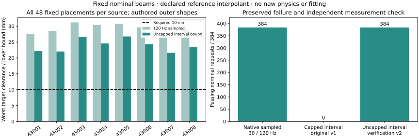
Historical interface panel · 06 September 2026 · Isaac Lab + MuJoCo replay
From a working traversal
to a measured operating range.
All 42 registered Isaac Lab executions completed. Reactive and scripted privileged crouching each pass 9/10 pose trials; all ten blind trials contact. The table separates controls and delays. This historical stage added causal observation delay and a solid blocked-underpass control. The previous completed fourteen-run batch also survives a stricter native outer-envelope crossing audit.
| Condition | Reactive | Blind | Oracle |
|---|---|---|---|
| nominal | 2/2 | 0/2 | 2/2 |
| height_minus10mm | 2/2 | 0/2 | 2/2 |
| height_plus10mm | 2/2 | 0/2 | 2/2 |
| station_minus15cm | 1/2 | 0/2 | 1/2 |
| station_plus15cm | 2/2 | 0/2 | 2/2 |
| absent | 2/2 | not run | not run |
| raised | 2/2 | not run | not run |
| blocked | 0/2 | not run | not run |
| delay_100ms | 2/2 | nominal reused | nominal reused |
| delay_250ms | 2/2 | nominal reused | nominal reused |
| delay_500ms | 0/2 | nominal reused | nominal reused |
Complete variation result and predictions →
Pose robustness fails its registered prediction: reactive and oracle each pass 9/10 pose trials. Both fail at station −15 cm in seed 8042 with a 429.159 N contact. All ten blind trials contact. The 100 ms and 260 ms delays pass 2/2 each; 500 ms refuses and fails 2/2. Negative specificity passes 6/6, including blocked controls that still collide.
mj_forward; it does not execute new dynamics. The visual mesh differs from the Isaac collision asset. Replay provenance. Previous 8031 replay.Historical policy-data readiness snapshot: 144 observed sensor values per decision; 10/16 complete skill-label pairs, including one where both tested skills fail. Six negative controls still need crouch comparators. No policy has been trained. Data contract and missing-label ledger →
A stricter crossing check
All fourteen previous classifications remain unchanged: ten passes and four failures. The 45 authored native outer shapes finish crossing 20–40 ms later than body origins. This is a recorded-pose envelope audit, with the old result retained.
Audit and all fourteen outcomes →The central question is still open
We have evidence for inverse generation and bounded embodied feasibility. We have no result showing that Motion2Scene environments improve policy learning over random or analytic generation. That comparison determines whether the intended contribution holds.
How far from the complete project →Project assessment · evidence gates, not a completion percentage
An embodied prototype.
An unfinished learning contribution.
The project is beyond an offline geometry demo. It is not yet submission-ready: the decisive downstream comparison could still reject our thesis. More successful replays cannot substitute for that experiment.
| Workstream | Current status | What remains |
|---|---|---|
| Inverse scene generation | Strong offline evidence: 384/384 proxy-audited requests | Earn the learned generator's cost against the strong analytic method. |
| Geometry and continuous time | 384/384 conditional native outer-envelope time bounds at nominal placements; separate static proxy pose domains | Joint pose/time uncertainty coverage, cooked-shape validation and numerical enclosure guarantees. |
| Closed-loop execution | Demonstrated: 18/24 requested generated-source slots separate | Fresh-source transfer, complete action vocabulary and disturbance testing. |
| Perception and commands | 42-cell scripted stress panel; three development switching banks qualified | Noise/depth validation and transfer of the qualified switching interface. |
| Downstream policy learning | One learned analytic-control rescue; original v1 tied on its partial wave | Complete the four-arm requested-budget comparison; source-held-out transfer is deferred. |
| Paper and release | Notebook, protocols, failure ledger and demos available | Comparative figures, final claim audit and reproducible benchmark. |
Next decisions: complete the registered four-arm labels and common-learner evaluation on the three development carriers, then choose the paper claim from the measured outcomes. Original v1 remains paused at 120/600. Preserve failures at every stage. Hardware validation remains a separate choice tied to the final deployment claim.
Latest Isaac Lab follow-up / 06 September 2026
A wall is no longer
mistaken for an overhang.
Upper obstacle hits now require measured free space below. In fourteen evaluation-bank trials, all ten normal reactive/oracle requests pass contact-free traversal. The four absent/raised reactive controls reject wall hits without switching; both deliberately late requests are denied and remain avoidance failures. This is one source and a scripted interface, not learned-policy performance.
Absent/raised controls reject the wall over the full capture, independently of the timing guard.
Reactive critical-beam passages with zero recorded beam contact at 200 Hz.
Realized reference banks audited against source routes and compared across all cells.
Late requests refused. These remain failed avoidance tasks, not successes.
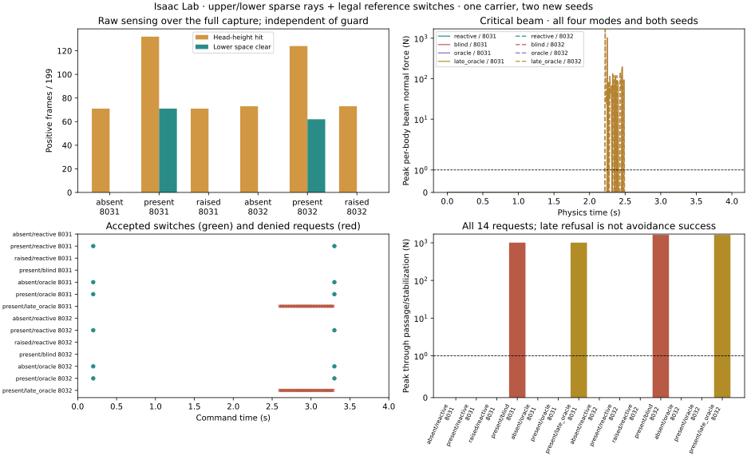
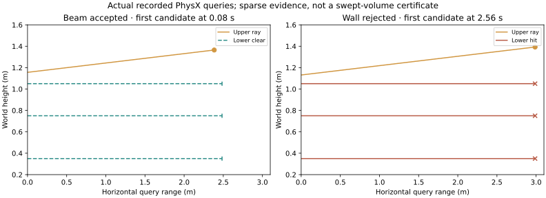
Next gate. Vary beam height, position and observation delay, retain blocked-underpass controls, then freeze the sensor/command API for the matched training-data comparison. Better sensing alone cannot establish Motion2Scene's downstream learning value.
Latest Isaac Lab experiment / 06 September 2026
The sensed beam now changes
the executed motion.
An ideal sparse collision-ray sensor triggers a phase-aligned walk-to-d040 switch under frozen SONIC. The corrected 12-cell pilot spans six conditions and two seeds on carrier 41002. Both critical-beam reactive trials clear with zero recorded beam force at 200 Hz. All four absent/raised controls switch unnecessarily on the far wall, so specificity fails. This is a scripted interface result, not learned-policy performance.
Critical-beam reactive passages, with zero recorded beam contact.
Critical-beam switch times. Negative controls instead trigger late on the wall.
Direct physics-step contact capture, synchronized against every 50 Hz control frame.
Absent/raised controls make unwanted late switches. Selector specificity fails.
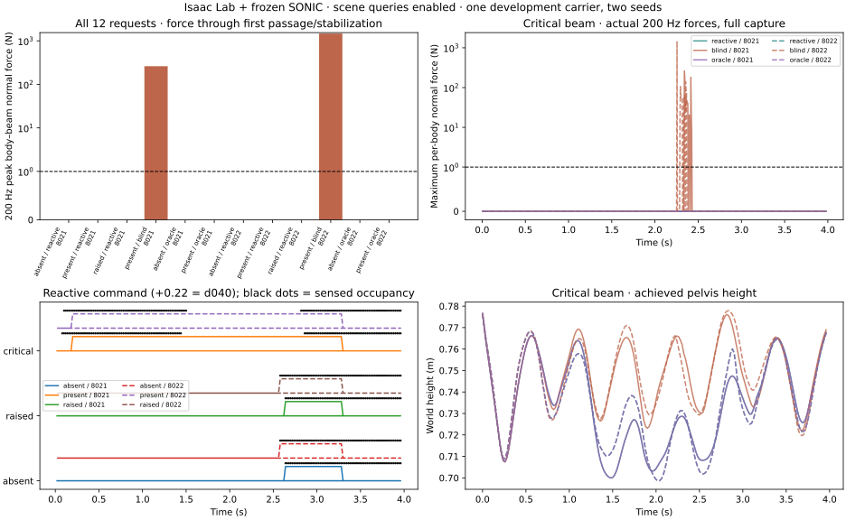
Next gate. Distinguish walls from overhead free space and enforce legal transition phases, then test beam height, position and sensing delay before training. Then compare Motion2Scene-generated training scenes against uniform placement, the strong analytic/grid generator and an unconstrained same-family model at matched budgets. Keep all source ancestry splits and the 430xx exclusion.
Latest evidence / 06 September 2026
Generated beams now distinguish
closed-loop robot motions.
The frozen learned-proposal, pattern-search and rejection pipeline completes 52 physics cells. Six of eight source pairs qualify; all their three fixed beams admit d055 without sampled beam contact and induce upright contact. Two refused sources remain in the 24-slot denominator. These are previously observed development sources with one physics seed, not a downstream learning result.
Requested generated-scene slots achieve executed contact-free separation. All 18 upright runs still cross.
d040 also clears the selected 41002 beam. The deeper d055 reference is not necessary for that scene.
Worst native-outer interval bound for the declared 200 Hz d055 interpolant on carrier 41002.
Frozen outputs have conditional local full-pose domains under the static capsule model.
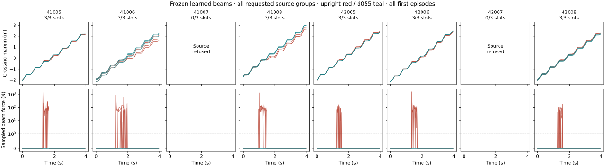
Historical planning snapshot, before the later sensing repair. Demonstrate that generated training environments improve exteroceptive traversal success or sample efficiency against random placement, a strong analytic/grid curriculum and unconstrained generation. The later interface pilot clears the critical beam but falsely switches on the far wall in every absent/raised control. Fix sensing specificity and legal timing next; the default downward height-map path still does not represent this overhead beam.
The temporal and 384-output certificates cover different geometry/source settings. They do not form a joint native continuous-time guarantee. The local-pose audit preserves a failed raw-score reproduction predicate caused by a 20 mm versus 100 mm clearance cap; a separate audit exactly reconciles both scores.
Earlier offline learning milestones / 06 September 2026
The learned proposal helps.
The remaining question is how much search it can replace.
On eight new source motions, learned initialization plus pattern search accepts 384/384 outputs, compared with 30/384 from uniform starts under the same search budget. The original gradient method also accepts 384/384: the predicted acceptance gain over gradient fails because the counts tie.
Learned pattern, fresh-source audit.
Eight source groups; finite reference checks.
Uniform pattern, same sources and search-query budget.
New student/control fits in the distillation pilot.
Observed development sources.
Obstacle-present learned-generator execution results admitted.
| Research question | Status | Evidence or next discriminator |
|---|---|---|
| Does local motion conditioning matter? | Supported in the beam family | Local event features outperform globally pooled features; input-swap controls expose event dependence. |
| Does more source data help? | Pooled gain; source regressions | Equal-query 4→8-source yield rises 95/192→119/192. Different six-source subsets differ substantially. |
| Does learned initialization transfer? | Fresh-source audit completed | Eight new CPU-generated sources; models and methods fixed before acquisition. Learned pattern improves over uniform on every source. |
| Can the network replace search? | First distillation pilot completed | Hybrid raw 334/384; original raw 292/384. Budget controls and failed criteria are shown below. |
| Are the scene–motion relationships guaranteed? | Conditional, incomplete | Finite proxy checks; two earlier continuous-placement certificates have explicit body/time/numerical assumptions. |
| Do generated obstacles distinguish executed motions? | Source pilot now completed | 18/24 requested source-scene slots separate; see the latest execution result above. Downstream policy improvement remains untested. |
Deep dive / Self-supervision and its limits
Motion can constrain a scene.
It does not uniquely identify the room.
A crouch is compatible with an empty room as well as a low beam. Our objective is to learn a distribution of useful constraints under explicit geometry and alternative-motion assumptions. Materials, room statistics and the natural frequency of obstacles do not follow from motion alone.
Where the supervision comes from. The motion supplies the desired selection under a fixed evaluator. A beam should clear the crouch and obstruct its cheaper upright alternative. No human labels a correct obstacle coordinate. The current experiments construct matched target/neutral pairs; arbitrary unpaired motion data still needs a justified alternative set and contact contract.
minimum target clearance ≥ +10 mm
minimum neutral clearance ≤ −10 mm
The second condition prevents an irrelevant obstacle that both motions avoid. The first prevents making the crouch “necessary” by hitting it too. A low preference loss alone is insufficient. The checker uses 29 proxy capsules on 13 links and every recorded frame; the encoder’s reduced temporal representation is not the collision model.
What we retain from LfLH
LfLH learns obstacle distributions using a motion encoder and a fixed planner decoder. Our proposed humanoid adaptation retains fixed geometric feedback while evaluating whole-body feasibility and declared alternatives. This is an adaptation, not a reproduction or evidence of arbitrary humanoid generality. Original LfLH, §III.
What the new student learns
Search on training motions creates sets of verified placements. Set-only and hybrid students learn from those synthetic targets. An extra-training control receives enough geometry queries to cover the hybrid’s full teacher cost. Teacher points define a constructed distribution, not real-world scene frequency.
Why collision avoidance and collision interference need different geometric proofs
To prove target clearance, an outer approximation must contain the imported collision body. To prove alternative interference, use an inner-body witness or direct imported-geometry intersection: an outer capsule may overlap when the real body does not.
For motion between frames, first define interpolation. A proved link-point speed bound V and interval duration Δt give a conservative clearance allowance VΔt/2 from the nearest endpoint. Placement displacement and numerical error add further allowances. Sampled maximum speeds are not proved bounds. Tracking uncertainty requires its own evidence.
The current 113-placement audit is finite. Earlier continuous-placement certificates cover two selected scenes only under stated static-proxy and numerical assumptions. They do not establish imported-body, between-frame or physical-execution guarantees.
How this grows into complex 3D scenes
Preserve whole-body time, local frames and contact state; add a qualified obstacle family before learning arbitrary object sets. The target must clear every forbidden-contact object, while each alternative must have a valid blocking witness. Object overlap, access, support and intended contacts also require joint checks. Per-object validity does not certify a complete scene.
Scale independent motion sources with multiple predeclared subsets and separate equal-query and equal-visits comparisons. More edits of the same motion increase variation, not the number of independent sources. Keep new evaluation pools outside fitting, normalization and method selection.
01 / Earlier controller qualification evidence
A real step forward.
Not yet the full inverse-learning loop.
The earlier qualification stage established reproducible motion acquisition, controlled reference ladders, successful walking executions, and a localized crouch retained in one recorded execution. The complete experiment yields below show where these successes stop.
Scope: the fresh-machine Kimodo qualification study reported here. Earlier SweepCF and parallel geometry-only hallucination experiments use different corpora and protocols; their results are not pooled with these counts. See the separate geometry-only self-audit for that track’s findings and identified defects.
Confirmatory references generated.
Eight independent shared seeds.
Fresh held-out walking runs accepted by the tracker gates.
Tracker survivors retain the route.
Below the registered 80% target.
Q4-qualified ladders or dataset-eligible critical scenes admitted.
Walking: reference and achieved motion
Crouching: a functional change survives tracking
Rendering contract: these videos assign archived joint/root states to the G1 MuJoCo model and call forward kinematics; they do not integrate physics. All panels share a camera following the first panel’s root and a common elapsed-time clock. Existing Isaac records supply the execution verdicts. Rendering at 30 fps uses nearest source frames (recorded at 50 fps). The videos are visual replays, not new MuJoCo trials or real-robot demonstrations.
02 / Method and research hypothesis
Motion does not reveal a room.
It can reveal a useful constraint.
Motion2Scene reverses the usual scene-to-motion question. Given an executable target and matched alternatives, infer scenes that make the target useful relative to the explicitly tested alternatives. An empty room is compatible with crouching; an overhead beam can distinguish contact-qualified walking and crouching. This is not a claim of globally minimal adaptation or physically impossible upright crossing.
What changed
Prompt labels are treated as acquisition instructions—not behavior labels. We measure path-aligned whole-body envelopes, compare each adaptation with its same-seed/same-route walk, and construct deterministic same-carrier crouch variants when prompting alone does not yield eligible motions.
What stayed fixed
SONIC remains the tracking controller. Frozen source records, generation settings, selection manifests and qualification gates determine the outcomes. MuJoCo provides reference geometry and replay; it does not turn a reference animation into execution evidence.
The minimal-feasible label
Critical for level k: target clears, and every weaker level fails.
For a beam, the first analytic approximation is an interval between the target and weaker swept-height requirements, after reserved clearance and strike margins. A valid dataset record still needs exact geometry, obstacle-removal and jitter checks, qualified motions, and execution verification. Global optimality over all humanoid motions is not claimed.
Move the beam. Change the smallest feasible motion.
Toy required heights: 1.32, 1.28, 1.24 and 1.20 m, plus a 1 cm target clearance margin. This scalar example ignores the rest of the body, route, timing and dynamics.
03 / How the corpus is sampled
Pair the random seed.
Then test the functional effect.
The original 18-motion corpus remains pilot_characterization_v1, development-only. The next corpus froze one revised prompt grammar and reused each of eight fresh seeds across all 18 prompt cells.
Seeds 41001–41008 · 24 references per body mode · 48 per route
Acquisition distribution
Kimodo-g1-rp, four-second clips at 30 fps and 100 denoising steps. Body modes: walk, duck, arm tuck, shoulder turn, step-over and carry-walk. Routes: straight, gentle-left and gentle-right. Each shared seed supplies a complete factorial block.
The 144 outputs are not 144 independent experimental units. Shared-seed pairing controls the noise realization for clause comparisons; it does not make separately generated motions matched execution ladders.
Functional distribution
We measure whole-body top height and width normal to the local route, not just root height or world-axis width. Each non-neutral reference is paired with its same-seed, same-route walk. A strong peak effect can still fail localization, recovery, route alignment or joint limits.
Semantic levels: S0 absent → S1 elicited → S2 localized → S3 route-aligned → S4 controller-retained. Missing complete predicates stay not_measured, not “pass” or “fail.”
Exact prompt examples and reproducible design
Neutral straight-route prompt:
A person walks at a steady pace in a straight line
Same-route duck prompt:
A person walks at a steady pace in a straight line, then near the middle lowers into a crouch to pass under an obstacle, stands upright again, and continues walking
The same eight seeds are used for both prompts and the other 16 cells. Wording is not revised after inspecting confirmatory outputs.
Download the complete frozen 18-prompt grammarCritical geometry versus nuisance diversity
The future scene distribution is factored as S = R(K, ν): K specifies the critical beam/gap location and dimensions; ν varies noncritical context. In an analytic beam baseline, height can be sampled within a nonempty critical interval. Context variants must preserve the decision after rechecking—not merely look different.
All intensity variants, raw/repaired versions, critical-token renderings and physics repeats from one base carrier must stay together in dataset splits. Carrier/ladder groups are the independent units; nuisance scenes and physics seeds are repeated measurements. No learned scene distribution or downstream training result is reported yet.
04 / Motion and scene illustration
Same carrier. Same clock.
Different height envelopes.
After endpoint tracking failures in the original crouch batch, a shared-clock construction was registered to test timing as a possible cause. Neutral, d055 and d085 references receive the same time map, derived from the deepest adaptation’s activity. The minimum local pace is 70% of the original; total duration grows about 19–20%.
Reference geometry only / proposed beam scene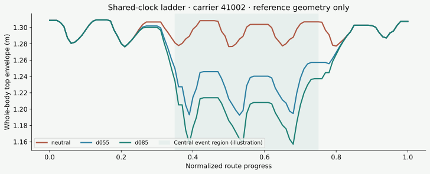
Across all eight shared-clock groups, 24/24 references pass Q0/Q1, and the 16 adapted references reach paired S3. All eight groups have ordered central heights; minimum adjacent separation per group ranges from 1.24 to 3.27 cm. These are candidate ladders. Their proposed nine-cell tracking pilot did not launch because its held-out route-validation prerequisite failed. The separate paired timing diagnostic below subsequently tested neutral/d055 in three development carriers without changing that gate.
05 / Complete results, including the gates that failed
The bottleneck is the motion bank.
Prompt compliance alone did not produce eligible adapted supervision. Controlled geometry helped create ordered reference differences, but execution retention remains insufficient for admitting a robust ladder.
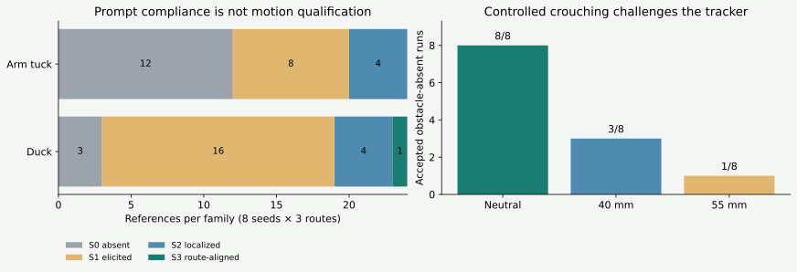
not_measured complete semantic labels. Right: one registered physics seed, eight controlled carriers, three levels each. Twelve rejected runs all have endpoint tracking error as their sole scientific rejection reason. Tracker acceptance is not S4 retention.| Experiment | Design / comparator | Measured outcome | What it supports |
|---|---|---|---|
| Confirmatory acquisition | 8 shared seeds × 18 prompts | 144/144 generated; Q0 132/144; Q1 144/144. Valid route classes: 34 straight, 16 left, 16 right; 65 over-turn, 11 looping/reversal, 2 insufficient progress. | Operational acquisition and behavior-dependent screening—not an execution-qualified adapted bank. |
| Original controlled ladders | 8 carriers × 5 levels | 40/40 Q0/Q1; 32 adapted references reach S3 (8 neutrals are not applicable). 7/8 ordered groups; 10/32 adjacent diagnostic reference intervals nonempty with 10 mm target + strike margins. | Some reference-level separability. Zero admitted dataset-critical scenes. |
| Original obstacle-absent Q3 | 8 carriers × neutral/d040/d055; seed 7600 | 24/24 completed; 12 accepted. By level: 8/8, 3/8, 1/8. S4: 0/16 adapted runs. 0.174 contended GPU-hours. | Walking survives more often than controlled crouching under the registered gates. No qualified three-level ladder. |
| Fresh route validation | 8 new neutral seeds 42001–42008; physics seed 7700 | 8/8 reference-admitted and completed; 7 tracker-accepted; 5/7 survivors pass relative route retention (5/8 overall). 0.068 contended GPU-hours. | 71.4% misses the preregistered 80% criterion. The relative-route gate is not validated under that criterion. |
| Shared-clock construction | 8 original carriers × 3 levels | 24/24 Q0/Q1; 16/16 adapted S3; 8/8 ordered reference groups; 0 launches in the original gated Q3 pilot. | Matched reference candidates; original Q3 pilot remained gated. See the separate paired timing test below. |
All eight fresh route traces

Frozen route tolerances, instrumentation disagreement and interim-report correction
The held-out relative-route gate requires path-length and net-displacement ratios in [0.9, 1.1], endpoint error ≤ 0.35 m, heading-change error ≤ 20°, cross-track RMSE ≤ 0.10 m, maximum cross-track error ≤ 0.20 m, monotonic progress fraction ≥ 0.9, no reversal or self-intersection, and a valid reference route.
The older absolute route classifier marks seven tracker survivors as over-turn and the contact-rejected run as valid straight. This is disagreement between instruments, not grounds to discard measured route errors. In particular, 11.8 cm cross-track RMSE is consequential for scenes with centimetre-scale margins.
One interim four-run analysis incorrectly adjudicated the 80% prediction before the batch finished. That adjudication is invalid; only the complete eight-run relative_retention_result_v2.json is authoritative. This page uses that final result, with its source hash in the media manifest.
Historical rationale, before the September 6 beam interventions: why learning was deferred. There are no admitted Q4 ladders, no validated obstacle-present preference reversal, and no measured forward-policy utility. A learned generator would not resolve the present uncertainty about motion execution and route retention. The next result must be a qualified target succeeding where its qualified weaker counterpart fails because of the obstacle.
06 / Follow-up: paired controller timing test
Slowing down made tracking worse.
All 12 registered runs completed: three development carriers × original/shared-clock timing × walk/crouch, at physics seed 7900. Slower timing increased crouch endpoint error in every carrier by 9.9–13.6 cm. We will retain original timing for the next repeatability test.
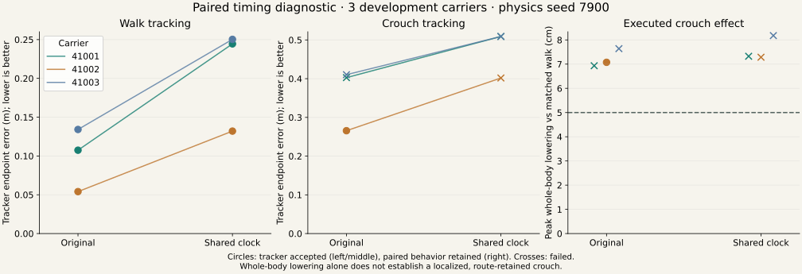
| Condition | Completed | Tracker accepted | Relative route passed | Paired behavior retained |
|---|---|---|---|---|
| Original walk | 3/3 | 3/3 | 3/3 | Not applicable |
| Original crouch | 3/3 | 1/3 | 1/3 | 1/3 |
| Shared-clock walk | 3/3 | 3/3 | 3/3 | Not applicable |
| Shared-clock crouch | 3/3 | 0/3 | 0/3 | 0/3 |
Both predictions of improved crouch tracking failed; the walking-survival prediction passed. All five rejected crouches failed the endpoint tracking threshold. The batch used 0.106 contended GPU-hours with pauses under a 9000 MiB free-memory startup guard.
A concrete candidate for the next test. Original-clock carrier 41002 retained a localized 7.08 cm whole-body reduction: 72.9% of reference magnitude and 88.4% event overlap. Its walking and crouching executions passed the existing route rule in this run. This is a single-seed development result; it does not qualify a ladder or create a positive scene-learning label.
Measurement sensitivity and route drift both matter.
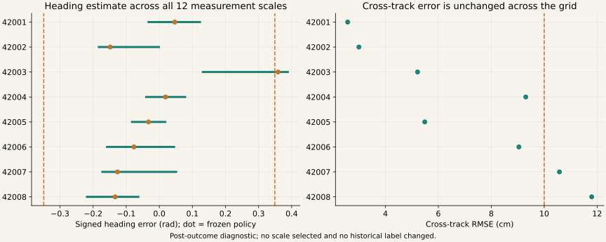
07 / Repeated motion evidence → analytic beam proposals
A repeated pair.
A first finite-beam teacher.
Original-clock carrier 41002 walking and d055 crouching pass all three new physics seeds. The analytic teacher uses both reference motions and all six achieved trajectories to search obstacle positions and heights in a shared world frame.
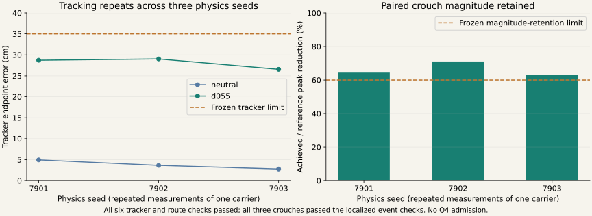
13 of 27 placements have a common height interval.
The search crosses nine route stations with three beam depths. It intersects clearance constraints from all eight sources, with 10 mm clearance/strike margins and another 10 mm vertical reserve on each side. The widest interval is 11.79 mm after those reserves.
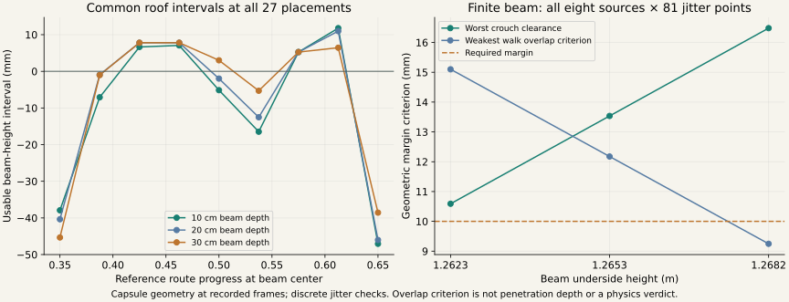
The new analytic capsule-to-box query minimizes distance over each entire capsule axis, avoiding a contact miss demonstrated in the older five-point query. It is exact for static capsule geometry up to numerical roundoff. Collision-model agreement and motion between recorded frames still require validation.
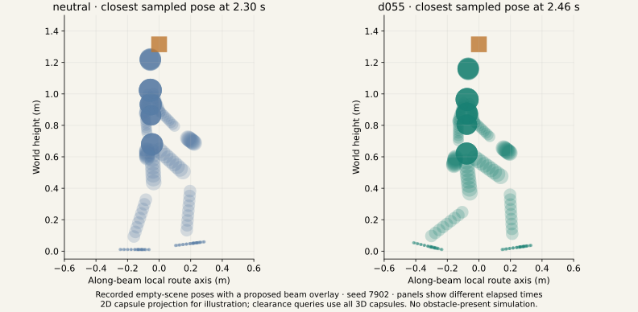
The intermediate motion prevents a minimality claim. All three d040 runs pass tracking, route retention and central ordering, but only one exceeds the unchanged 50 mm behavior threshold: measured reductions are 48.53, 51.79 and 45.08 mm. Two intermediate executions also clear the proposed beam at every tested jitter placement. The beam distinguishes walking from crouching; it does not establish that the deeper crouch is necessary.
Intermediate-level results and the resource amendment
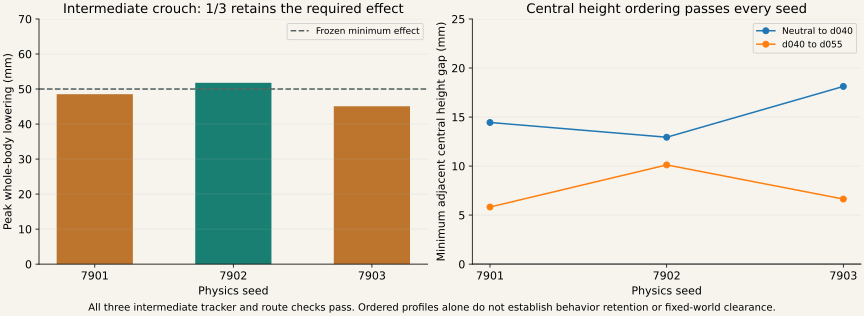
The original 9000 MiB extension manifest launched zero cells. A documented prelaunch resource amendment restored the prior 7500 MiB trajectory-only startup guard. Motions, seeds, comparators and scientific thresholds stayed unchanged. The six pair-repeatability runs used 0.0453 GPU-hours.
These proposals remain ineligible for the execution-qualified training dataset. A self-supervised generator can still use the motion data with a fixed evaluator of alternatives and execution variability, as the separate diagnostic below demonstrates. An ordered reference ladder and a nonempty geometric interval do not establish physical execution.
08 / First motion-only inverse learning
The generator learns where obstacles matter.
A temporal whole-body encoder now predicts a distribution over beam station and height. A fixed geometric evaluator supplies the training signal: clear the crouching motion and constrain upright alternatives. No obstacle coordinates or analytic teacher intervals enter the loss.
Completed CPU training runs.
Four objectives × three seeds.
Raw joint-valid proposals with preference and KL.
256 proposals per seed.
Validity without KL, with narrower coverage of valid placement regions.
Selected development carrier.
Generalization untested.
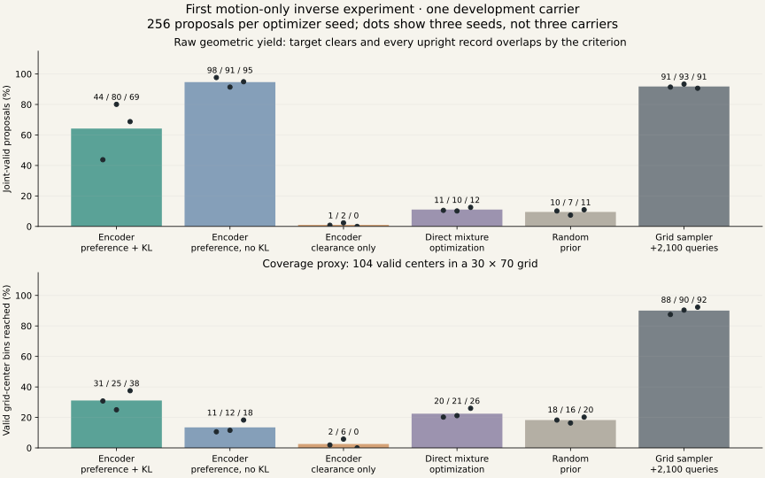
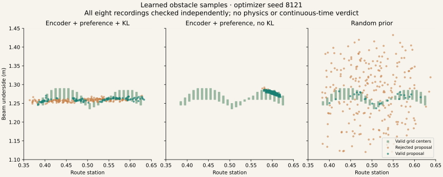
Learning works in this geometric diagnostic; robustness is still a separate test. Two of three selected full-model beams pass all 81 discrete jitter placements. One misses the target-clearance margin in nine placements. Actual imported body geometry and between-frame clearance remain unverified, and no obstacle-present physics runs were added.
All 3072 model evaluation proposals agree between PyTorch and NumPy to within 1.95 × 10−16 m for this primitive model. The complete experiment takes about 136 seconds of training on CPU. Saved checkpoints and a sampler with explicit rejection make the prototype reproducible.
09 / Train and test placement uncertainty
Better robustness needs an explicit interference margin.
Six new models train against beam translation and yaw perturbations. Every proposal now receives the same independent audit: 81 grid placements and 32 interior placements, across all eight motion recordings. Training improves two of three seeds in each KL family, but both families regress on the third.
Unfiltered proposals audited.
Six saved baselines + six new models.
Placements checked per proposal.
Finite samples, not a continuous certificate.
Paired comparisons improve.
Two regressions remain visible.
New-model rejections fail only the upright-interference margin.
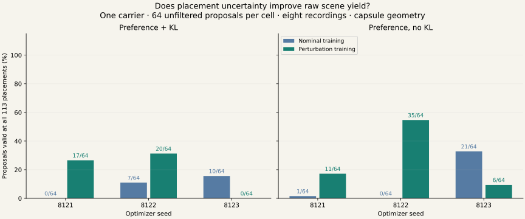
The next objective must express both margins. The current preference loss can be almost zero with 5 mm of upright overlap, while the audit requires 10 mm. This gap motivated the separately registered explicit-margin comparison below. Perturbation training alone did not resolve the mismatch.
The new training takes 345 seconds on CPU, followed by 208 seconds of independent evaluation. No new physics runs were used. The audit still contains one repeated carrier and no Q4-admitted ladder; motion generalization, imported collision geometry and between-frame clearance remain unverified.
10 / Explicit margins and bounded placement checks
The loss now expresses both geometric margins.
Twelve new CPU runs test an explicit upright-interference penalty, alongside target clearance. With preference retained and KL removed, all three seeds improve: 11 / 35 / 6 becomes 56 / 54 / 34 valid proposals out of 64. The KL version improves two seeds and regresses on one.
Raw validity across all 113 placements.
Preference + both margins, no KL.
No-KL seeds improve with the new penalty.
Still one source carrier.
Proposals remain rejected in that family.
41 interference failures; 7 clearance failures.
New training runs.
Preference and KL ablations included.
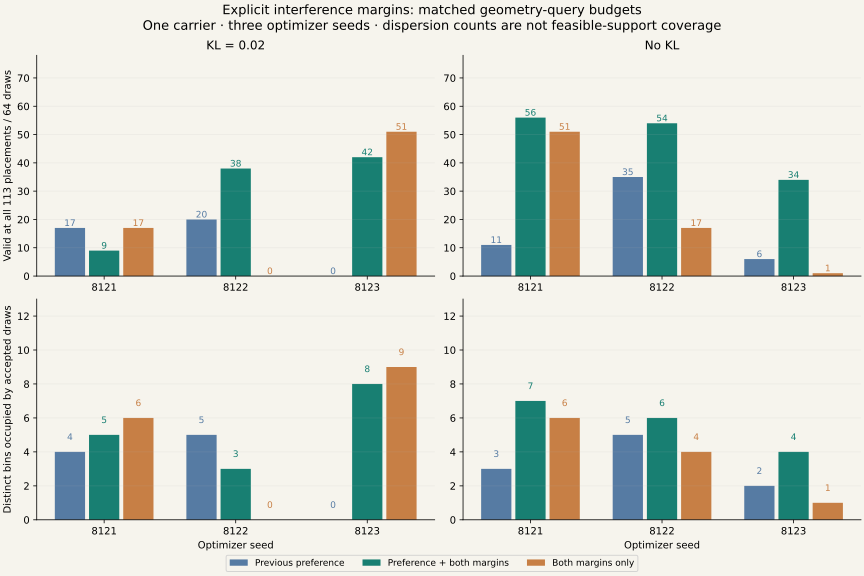
Two selected scenes pass a continuous-placement check.
A separate bounded checker covers the full x/y ±2 cm, z ±1 cm and yaw ±0.02 rad domain for two fixed representatives. It discharges 710 and 812 cells using 1419 and 1623 queries. An independent audit verifies the complete partitions and every queried clearance.
These are conditional geometric certificates. The result assumes an absolute numerical-error allowance of 10−8 m and the recorded capsule model. It covers placement between the grid points, while imported body geometry and motion between recorded frames remain unverified. The selected two-scene demonstration does not estimate generator success or establish physical safety.
The most promising development candidate is now preference plus both margins without KL, followed by independent rejection. The grouped conditioning test below now checks excluded source carriers; the remaining collision assumptions still need verification. The fresh default KL sampler audit also remains visible: 0 of 8 accepted, without retries.
11 / Does the network use the motion?
The first grouped generator barely responds to the crouch’s location.
Moving from one carrier to grouped motion inputs exposes a failure: the conditioned generator produces zero all-placement-valid proposals on both test carriers. Changing the input event scarcely changes its distribution. The next model needs to preserve where adaptation occurs.
Valid conditioned test proposals.
All draws retained, no resampling.
Constructed crouch references.
Eight source parents × three events.
Excluded test source carriers.
Development data, previously inspected parents.
Completed CPU fitting runs.
Nine generators + 36 per-motion searches.
The split is fixed by parent: four training, two validation and two test carriers. Early, middle and late crouches preserve the neutral route and start/end poses. Every target and neutral passes joint-limit and self-intersection checks, but none gains execution qualification. The network receives motion geometry; obstacle-placement labels and construction event IDs are excluded.
{kind=link}
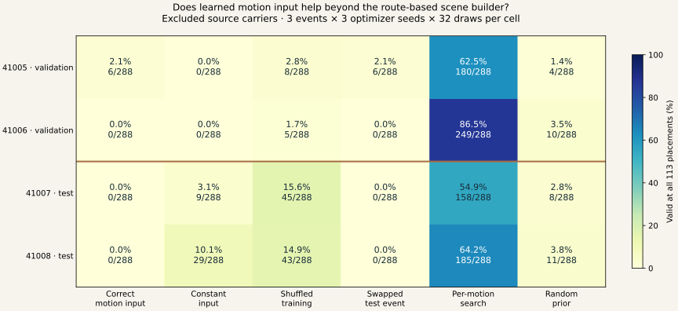
Direct search accepts 158/288 (54.9%) proposals on carrier 41007 and 185/288 (64.2%) on 41008. The corresponding correct-input counts are zero; constant inputs accept 9 and 29, shuffled training 45 and 43, and the random prior 8 and 11. Search finds passing draws for every excluded event, so this failure does not reflect an empty feasible set under the tested geometry.
Useful conditioning is not established. Both predeclared predictions fail: correct inputs do not beat constant and shuffled controls on each test carrier, and swapping the input event does not lower validity. The checkpoint diagnosis is consistent with loss of event information; it does not prove which architectural or optimization choice caused it.
The next design retains a sequence of motion features and predicts local scene distributions at route anchors. Constant-feature anchors and analytic geometry search will control for the location prior built into that representation. A minimal implementation has now been evaluated in the event/scale study below. Whole-sequence geometry checks remain mandatory.
This is a reference-only development diagnostic. Two test parents, three edited event locations and one beam family cannot establish complex-scene generalization. Sampled capsule clearance does not certify imported robot geometry, between-frame motion, continuous placement uncertainty or obstacle-present execution.
12 / Local events and three kinds of scale
Local features help. More motion sources are the next priority.
The new model preserves where adaptation occurs. On two excluded development sources, local features produce 110/144 and 133/144 valid beam proposals, compared with 2/144 and 4/144 for matched pooled features. Swapping the input event drops both local counts to zero.
Local model: 243/288 valid test draws.
At 2,400 updates; two source parents.
Two → four training parents.
Equal update/geometry budgets; one nested subset.
Valid after swapping the input event.
Same model and evaluated geometry.
Independent CPU fits.
600- and 2,400-update snapshots from each.
All variants share eight route intervals, the same beam dimensions and the same geometric objective. The local model learns from target motion features at each interval; constant and pooled controls receive the same built-in station coverage. Every proposal is checked against both references over the complete sampled motion. There are no obstacle-placement labels.
{kind=link}
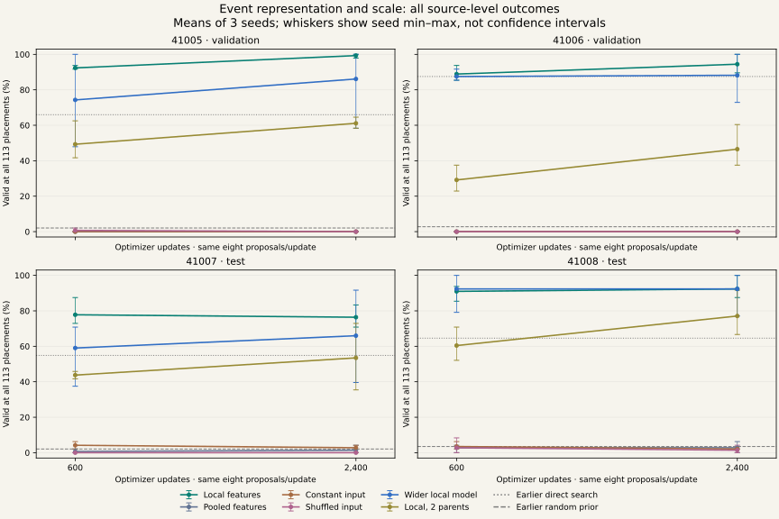
| Comparison | 600 updates | 2,400 updates | What this supports |
|---|---|---|---|
| Local, four parents | 243 (84.4%) | 243 (84.4%) | 4× updates leave total yield unchanged; individual sources move in opposite directions. |
| Local, two parents | 150 (52.1%) | 188 (65.3%) | More updates help this smaller dataset; four parents still perform better. |
| Wider local model | 218 (75.7%) | 228 (79.2%) | 109,750 versus 12,118 parameters does not beat the small full-data model. |
{kind=link}
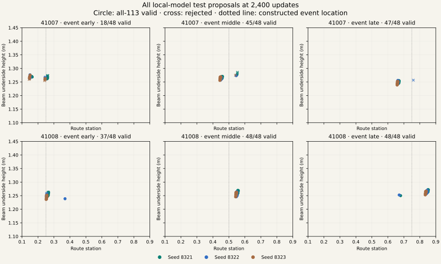
Verification is still required. The local model rejects 45/288 test draws: 43 miss the upright-interference margin and two miss target clearance. A separately fixed fresh sampling check accepts 0/8 on an early event because all eight miss the upright margin, despite clearing the target. That refusal is retained without retries.
The completed source/phase follow-up below adds distinct motion sources, two nested subset paths and withheld event phases. Keep the small local model as a baseline and compare analytic search and bounded geometric refinement before claiming an end-to-end cost advantage. The LfLH/LfH-CP source recheck separates scene diversity from downstream execution performance.
All 18 fits completed in 31.71 minutes on CPU; the independent audit took 7.33 minutes. It checks 8,064 new proposals at 113 placements, with 455,616 NumPy/PyTorch reference-query comparisons and maximum disagreement below 1e-16 m. These are reference-capsule results on previously inspected development parents. They do not certify actual imported colliders, continuous time/placement, obstacle-present execution or real-world scene frequencies.
13 / Source diversity and unseen event locations
More sources help on average. Which sources matters.
A new registered comparison keeps the small local event model and expands training from four to eight motion sources. On two crouch locations withheld from all training, valid proposal yield rises from 49.5% to 62.0% at equal compute. One of four excluded test sources still regresses.
Four → eight training sources.
Same 600-update query budget.
Eight sources, 50 visits per case.
123/192 unseen-phase test draws.
Registered comparisons improve
every test source.
Proposals audited independently.
113 placement checks each.
{kind=link}
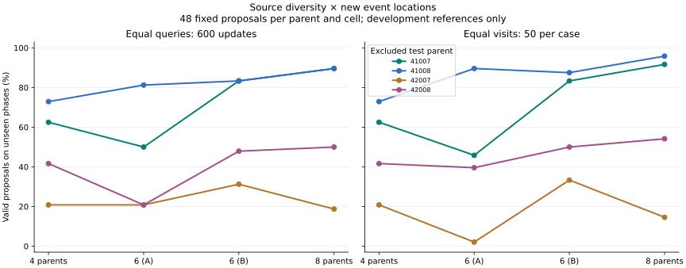
| Training set | Equal queries: 600 updates | Equal visits: 50 per case |
|---|---|---|
| Four parents | 95 (49.5%) | 95 (49.5%); 600 updates |
| Six parents, subset A | 83 (43.2%) | 85 (44.3%); 900 updates |
| Six parents, subset B | 118 (61.5%) | 122 (63.5%); 900 updates |
| Eight parents | 119 (62.0%) | 123 (64.1%); 1,200 updates |
Keep the failed prediction. All three comparisons fail to improve every test source. At eight parents / 1,200 updates, source 42007 accepts 7/48 unseen-phase proposals; its 0.35 event accepts 0/24 because the beams leave the neutral motion insufficiently obstructed. Source 42008 has a different problem: 19/48 draws fail target clearance. More data does not remove the need to check both constraints.
All 80 constructed targets and 16 neutral references pass Q0/Q1 screening. Original source roles remain unchanged; eight previously observed route-retention sources receive explicit new development roles before construction. No physical executions or scene admissions are added. Training takes 9.39 minutes on CPU and the independent audit takes 6.79 minutes. The largest NumPy–Torch query difference is 2.09 × 10−16 m.
The matched-query geometric search and refinement follow-up below now isolates a useful correction mechanism. Source selection should continue to use only training-pool geometry. Keep the small model and hard cases; do not choose the better six-source subset from these test outcomes for a new claim.
14 / Learned proposals with bounded geometric correction
A useful starting distribution. A correction layer that matters.
The hybrid generator improves independently checked test yield from 64.1% to 98.4%. It keeps the existing small event model, adjusts each beam within a fixed local neighborhood, and retains independent rejection. All four assisted comparators receive the same clearance-query budget.
189/192 valid refined test outputs.
Four excluded development sources.
Raw failures rescued / raw successes lost.
Same-index paired independent audit.
Hard 42007 / 0.35 event.
Raw model previously produced 0/24.
Fixed fresh draw batch accepted.
Three refusals retained without retries.
{kind=link}
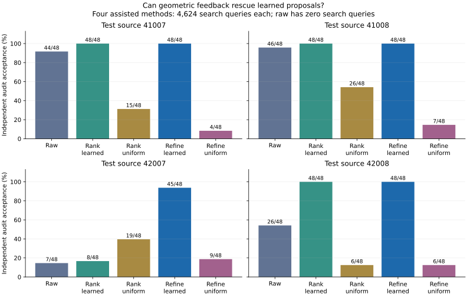
| Method | Valid test outputs | Search time | Interpretation |
|---|---|---|---|
| Raw learned proposals | 123 (64.1%) | No search | Inherited fixed draws; verification is still required. |
| Rank learned candidates | 152 (79.2%) | 35.53 s | Cheaper than gradients; weak on source 42007. |
| Rank uniform candidates | 66 (34.4%) | 35.15 s | Non-learned geometric search control. |
| Refine learned proposals | 189 (98.4%) | 112.72 s | Improves every test source over raw. |
| Refine uniform proposals | 26 (13.5%) | 113.02 s | The bounded gradient method depends on its starting locations. |
Refinement beats raw and uniformly initialized refinement on all four test parents. It ties ranking learned candidates on three parents, so its strict prediction of improving every parent over ranking fails. On source 42007 it improves 8/48 ranked outputs to 45/48 refined outputs. Gradients and forward searches match query counts, not computational cost.
The fresh refusal remains part of the result. A separately fixed sampler batch accepts 5/8 on the hardest case. The three rejected proposals keep their station unchanged and reach the allowed downward height limit; all still miss neutral interference. This motivates a bounded station-perturbation test. It does not justify retrying or accepting those outputs.
The reusable sampler returns world-frame beam proposals, accepted indices, rejection margins and full search/audit traces. The experiment adds no obstacle-present executions. Capsule geometry, finite time samples and finite placement checks do not establish an executable collision guarantee.
15 / Fixed-budget station exploration
Explore nearby positions before spending more on gradients.
Three local searches remove all five remaining original-gradient failures in a fixed fresh-draw comparison. Each accepts 192/192 test outputs and fixes the separate known-failure replay from 5/8 to 8/8. The gradient-free pattern method achieves the same measured acceptance with less search time.
Test outputs accepted by each new method.
Original gradient: 187/192.
Gradient failures rescued / successes lost.
Same-index paired audit.
Separate known-failure replay.
Original sampler: 5/8.
Less measured search time for pattern search.
Same clearance-query budget.
{kind=link}
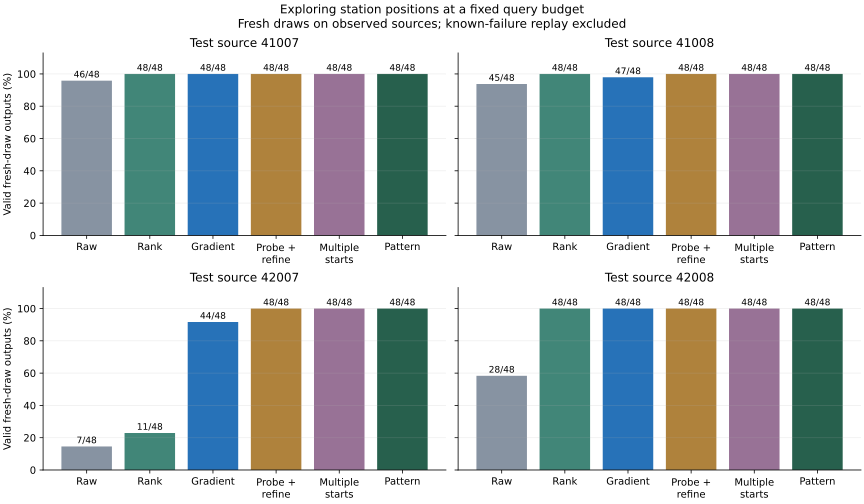
| Method | Valid test outputs | Search time | Change |
|---|---|---|---|
| Raw learned | 126 | No search | New fixed draw seeds. |
| Rank learned | 155 | 34.48 s | Rank 136 samples. |
| Original gradient | 187 | 114.23 s | 16 bounded updates. |
| Probe then refine | 192 | 89.58 s | Five station probes, then 11 updates. |
| Multiple starts | 192 | 94.86 s | Three short gradient branches plus two probes. |
| Pattern search | 192 | 35.19 s | Four rounds of coordinate probes; no gradients. |
All local methods stay inside the original proposal’s station ±0.05 and height ±0.03 m bounds. The new methods tie on acceptance but differ in placement concentration: mean accepted bins per test job range from 3.21 for pattern search to 3.79 for multiple starts. Bin occupancy does not measure complete feasible-support coverage.
Move to new sources before further tuning. All nine registered descriptive predicates pass, but these motion sources have informed several development decisions. The fresh-source comparison below retains every method and adds uniformly initialized pattern search on a newly assigned motion pool. The previous uniform-gradient result cannot establish the learned initializer’s value for a different search algorithm.
The independent audit checks all 2,352 outputs at 113 placements, including the separate replay. No new motion, physical execution or scene admission is added here. Perfect acceptance in this finite reference audit is not a collision guarantee for actual robot geometry, continuous motion or physical execution.
16 / Frozen methods, new motion sources
Test the learned initialization on new motion sources.
With the methods frozen before generation, learned pattern accepts 384/384 outputs on eight new motions, versus 30/384 from uniformly initialized pattern search. Both receive the same search budget.
New sources generated
Learned pattern accepted
Uniform pattern accepted
New training or GPU use
{kind=link}
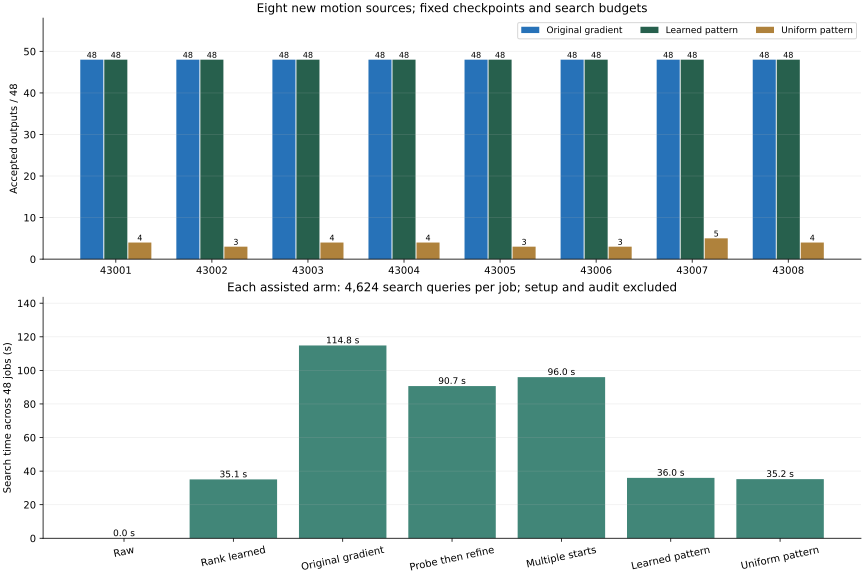
| Method | 43001 | 43002 | 43003 | 43004 | 43005 | 43006 | 43007 | 43008 | Total /384 |
|---|---|---|---|---|---|---|---|---|---|
| Raw learned | 43 | 34 | 45 | 40 | 28 | 37 | 30 | 39 | 296 |
| Rank learned | 48 | 41 | 48 | 48 | 41 | 48 | 48 | 48 | 370 |
| Original gradient | 48 | 48 | 48 | 48 | 48 | 48 | 48 | 48 | 384 |
| Probe then refine | 48 | 48 | 48 | 48 | 48 | 48 | 47 | 48 | 383 |
| Multiple starts | 48 | 48 | 48 | 48 | 48 | 48 | 48 | 48 | 384 |
| Learned pattern | 48 | 48 | 48 | 48 | 48 | 48 | 48 | 48 | 384 |
| Uniform pattern | 4 | 3 | 4 | 4 | 3 | 3 | 5 | 4 | 30 |
Registered predictions: learned pattern strictly improves over uniform on every source: True; no source loses versus gradient with a strict total gain: False; zero corresponding gradient successes lost: True. Pattern rescues 0 gradient failures and loses 0 successes. Ties fail the strict-gain condition. These descriptive checks are not significance tests.
The acquisition pins 1,197 local metadata records and the exact model snapshot before CPU generation. All eight new source identities and every derivative remain excluded from training and selection. CPU generation changes the backend from the older GPU source bank. Source acquisition, inherited training, setup, search and independent verification are accounted for separately.
These results concern generated straight walking, the existing crouch operator and one two-parameter beam family. Proxy capsules, sampled motion frames and finite placement perturbations do not guarantee collision relationships for the imported robot or physical execution. The next learning design tests whether search targets from training motions can improve the network enough to reduce online queries.
17 / New learning experiment: training-source distillation
Can the network absorb the search?
A fixed teacher searches only the 24 original training cases. Twelve new student/control fits compare geometric continuation, set-only imitation and their combination. Every final output is independently audited. The eight 430xx fresh-audit sources are never loaded or evaluated in this pilot.
Hybrid raw proposals accept 334/384, versus 292/384 for the original model and 310/384 for the stronger query-budget control. Hybrid five-evaluation search accepts 377/384, compared with 384/384 for original seventeen-evaluation search.
{kind=link}
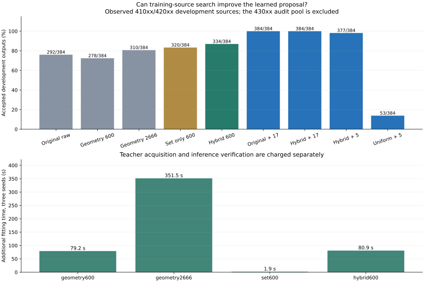
All eight development sources; 384 requested outputs per method.
| Method | Accepted / requested | Search queries/job | Mean accepted bins/job |
|---|---|---|---|
| Original raw | 292/384 | 0 | 2.125 |
| Geometry 600 raw | 278/384 | 0 | 1.750 |
| Geometry 2666 raw | 310/384 | 0 | 1.938 |
| Set only 600 raw | 320/384 | 0 | 1.938 |
| Hybrid 600 raw | 334/384 | 0 | 2.021 |
| Original + 17 evaluations | 384/384 | 4,624 | 3.208 |
| Hybrid + 17 evaluations | 384/384 | 4,624 | 3.000 |
| Hybrid + 5 evaluations | 377/384 | 1,360 | 2.521 |
| Uniform + 5 evaluations | 53/384 | 1,360 | 1.083 |
| Registered prediction | Outcome |
|---|---|
| P0_all_teacher_cases_nonempty | True |
| P1_hybrid_raw_no_source_loss_and_total_gain | True |
| P2_hybrid_raw_beats_query_control | False |
| P3_reduced_search_no_source_loss | False |
| P4_raw_accepted_bin_mean_preserved | False |
The recipe misses at least one registered source-wise raw-proposal or reduced-search criterion. Prioritize diagnosing teacher coverage, source-specific geometry and proposal concentration on development data before another fresh acquisition. Do not treat pooled gains or cheaper search alone as preserved performance.
Teacher acquisition retains 58 distinct-bin targets from 106/192 independently accepted candidates; every training case is nonempty. The full 165,216-query teacher cost is charged to each distilled student in the resource comparison. Hybrid adds 48,000 training queries; the geometry2666 control receives 213,280 queries, slightly exceeding the hybrid’s 213,216 total. No geometry-query saving is inferred from fitting time alone.
Five evaluations cost 1,360 search queries per job, versus 4,624 for seventeen: 70.6% fewer search queries. The implementation actually stops at five evaluations. Acceptance, source regressions, teacher acquisition, fitting and the independent audit all remain part of the conclusion.
18 / Toward a learned scene generator
Make each uncertainty observable.
What worked in the process
- Shared-seed design: paired functional comparisons replace unpaired prompt-group anecdotes.
- Controlled adaptation: one carrier supplies multiple levels, preserving identity and route instead of relying on unrelated prompts.
- Trajectory-first recording: lightweight archived states support quantitative retention analysis and later rendering without rerunning physics.
- Evidence separation: generated, reference-valid, tracker-accepted and behavior-retained are different statuses.
Next proposed tests
- Develop a qualified alternative set with adequate executed separation; retain the failed intermediate-level result and all measured small effects.
- Validate route measurement changes on fresh carriers, then qualify ordered motion ladders with strict 3/3 behavior retention.
- Validate collision-model agreement and temporal clearance, then test obstacle removal and placement jitter in physics.
- Test whether generated scenes improve a fixed downstream skill selector on independent scenes after obstacle-present qualification.
The motion-only generator, explicit-margin objective and conditional placement checker are implemented. The local event model now passes its conditioning controls. The source/phase comparison now shows a pooled data benefit with source-specific regressions. Bounded refinement now supplies a strong hybrid baseline. The fixed-budget station study resolves its remaining tested development failures. The fresh-source acquisition and its complete outcome are now recorded above. The completed distillation pilot above tests training-only supervision against explicit online query budgets; its source-wise failures determine the next learning step. Retain independent geometric rejection. Establish the remaining numerical, body-geometry and temporal contracts alongside that work. Verified scene–motion pairs qualify the downstream policy dataset; they are not required as obstacle labels for self-supervised generator training. Expand to lateral gaps and step-over obstacles as their motions qualify, keeping every derivative of a carrier in one dataset split.
This is an E0/E1-stage research report, not a completed Motion2Scene-LfLH method evaluation. The proposed loop builds on Learning from Hallucination, Learning from Learned Hallucination and critical-point hallucination. Those papers motivate the research direction; they do not provide evidence for this project’s current results.
19 / Inspect and reproduce
Every visual has a source.
The media manifest records source artifact hashes, selected examples, joint-order conversion, camera settings, output hashes and the rendering contract. Portable JSON snapshots omit machine-specific path prefixes; their hashes are recorded separately from the original local source hashes.
Renderer source · Related SweepCF traversal infrastructure
Rebuild these figures and videos from the research bundle
MUJOCO_GL=egl .venv_research/bin/python \ scripts/research/render_motion2scene_report.py \ --data-root /path/to/research-data/groot-wbc \ --research-repo /path/to/motion2scene
Requires NumPy, MuJoCo, Matplotlib, Pillow, ImageIO/FFmpeg, the G1 meshes, and the trusted local motion/trajectory artifacts named in the manifest. The page publishes derived media and portable evidence, not the entire non-git research bundle. A fresh clone alone cannot recreate the videos without those inputs. The renderer checks recorded trajectory and reference CSV hashes before use.